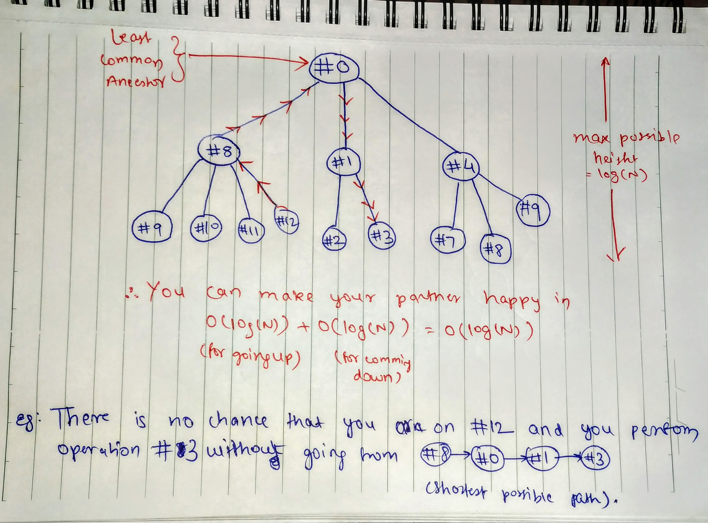

Keep your Girlfriend happy, with Centroid Decomposition
This is just analysis of human nature combined with some Algorithms. Just for Fun.
So today, we are going to analyze human behavior using a very famous data-structure Trees. We will be using:-
- DFS - Depth First Search
- A graph structure
- A tree structure
- and most importatntly, Centroid Decomposition
Theorm 1 (Jordan, 1869):
Given a tree with N nodes, there exists a vertex whose removal partitions the tree into components, each with at most N/2 nodes. (i.e. For any given tree, the centroid always exists)
What will we be doing:-
Dont worry if you dont understand. You will, when you see example below.
We will be maintaining a register of different actions we perform, a happiness rating, and a unique ID assigned to it. Again, you can use any data structure to store this, e.g. 2D Arrays, Maps, MySQL Database, and so on. Next task is gathering information. You need to keep a track of your action and your partner's reaction, rate it properly, save it somewhere. For Rating, I will be uploading a perfect rating algorithm later on, so stay tuned 😉. Till then, rate according to your own guess.
Other thing you need to implement is a real-time graph, stating all IDs of events in relation with each other. We create a node for each event, lable it with unique-Id assigned.
Real-Life Implemntation:
Consider following set of actions:-
- I took her to movie. (Happiness 200, #1)
- Buy Popcorn. (Happiness 210, #2)
- Slept in movie. (Happiness 20, #3)
- I took her to hotel. (Happiness 300, #4)
- Order her favourite Starter. (Happiness 160, #5)
- Came Late. (Happiness 40, #6)
- Greeted her with red flowers. (Happiness 190, #7)
- Took her to park (Happiness 500, #8)
- Greeted her with white flowers(Happiness 160, #9)
- Came Late. (Happiness 40, #10)
- Bought her some chocolates. (Happiness 300, #11)
- Went for a stroll. (Happiness 250, #11)
Making a Graph, and Converting it to Tree:
Finding the centroid of a tree : One way to find the centroid is to pick an arbitrary root, then run a depth-first search computing the size of each subtree, and then move starting from root to the largest subtree until we reach a vertex where no subtree has size greater than or equal to N/2. This vertex would be the centroid of the tree.
Decomposing the Tree to get the new “Centroid Tree” :

On removing the centroid, the original given tree decomposes into a number of different trees, each having no of nodes <= N/2. We make this centroid the root of our centroid tree and then recursively decompose each of the new trees formed and attach their centroids as children to our root. Thus , a new centroid tree is formed from the original tree.
Centroid Tree would be as follows:

Usage:
Now whenever you want to increase happiness, all you need to do is:
- Find any event with greater happiness and do-able in that situation.
- Fire a query in graph for finding shortest possible way.
- Follow that way.
Example:
Now if she is unhappy because I came late to park (case #10) and I want happiness to be 190. I know that case #7 is appropriate. So i will see graph and know that, best possible way to do that is: #10 -> #8 -> #0 -> #4 -> #7 So event would be: I took her to park -> I came Late -> to recover -> I took her to hotel -> Greeted her with red flowers 😉
Thus, problem solved. This may look obvious, but this will become more helpful as duration increase, and you have a lot to deal with. 😂